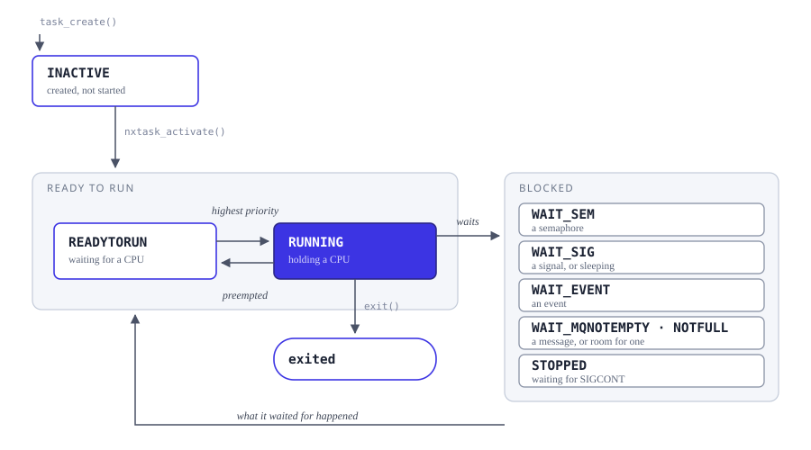
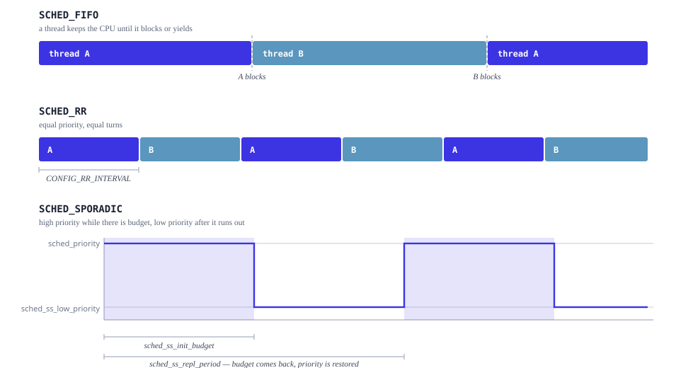

Scheduling
The scheduler is the part of the operating system that decides which thread will run. In NuttX, a thread can be a task, a pthread or a kernel thread (the differences are in Tasks vs. Threads and Kernel Threads vs. Pthreads).
In this context, whenever a thread finishes its job, waits for something (a semaphore, a message, a sleep), or is paused by another one with a higher priority, the scheduler is responsible for orchestrating it. This orchestration happens with other elements as well. The context switch is responsible for the thread swap. The kernel itself helps the scheduler by providing a TCB (Task Control Block) for every thread. The TCB holds the thread’s context, such as its priority, current state, and saved CPU registers.
How does the NuttX scheduler make this orchestration? The first rule is
to check the threads’ priorities: among the threads that are ready to
run, the one with the higher priority number runs first. When two threads
have the same priority, the scheduling policy decides who runs first and,
in NuttX, there are three: SCHED_FIFO, SCHED_RR and
SCHED_SPORADIC. The last two can be used only when they are enabled
in the configuration.
The scheduler itself is in sched/sched/. Threads are created, and
get their first priority and policy, in sched/task/ and
sched/pthread/. The thread states and the TCB are defined in
include/nuttx/sched.h, and each architecture does the context switch
under arch/.
Priority comes first
On a single core, the moment a higher-priority thread becomes ready, it
takes the CPU, unless preemption is locked with sched_lock() (see
below). When an interrupt handler makes it ready, the switch happens as
the interrupt returns. See Interrupts.
Nowadays many chips have more than one core. That is why NuttX has SMP
(symmetric multiprocessing) as a build option, CONFIG_SMP. A dual
core chip does not run in SMP by default: if CONFIG_SMP is not set,
NuttX uses just one core. Once CONFIG_SMP is enabled, NuttX uses the
cores at the same time, each one running its own thread. The option exists
only on chips whose port supports several CPUs, so not every MCU has it;
the NuttX simulator (sim:smp) is an easy way to try it.
With CONFIG_SMP, a lower-priority thread can run on one core while a
higher-priority thread runs on another. Every thread has an affinity
mask, the set of cores where it is allowed to run, and the scheduler only
picks a core inside that mask. When a core looks for the next thread to
run, the scheduler goes through the ready-to-run list and takes the one
with the highest priority. If the mask of that thread does not allow this
core, the scheduler skips it and looks at the next one in the list. This
shows a situation that may happen: a higher-priority thread can wait in
the queue while a thread with a lower priority runs. By default the mask
holds every core, so NuttX chooses where each thread runs; an application
narrows the mask with sched_setaffinity() (see below).
When a thread becomes ready, the scheduler first looks for an idle core in its mask; if there is one, the thread runs there at once. If no core is idle, the scheduler picks the core that is running the lowest-priority thread, and the new thread takes it only if its own priority is higher.
In NuttX, priorities go from 1 (SCHED_PRIORITY_MIN) up to 255
(SCHED_PRIORITY_MAX). The higher the number, the higher the priority
of the thread. A priority is not static, and there are four ways it can
change:
Application definition: an application sets the initial priority of a thread when it is created, or later with
sched_setparam(),sched_setscheduler()orpthread_setschedparam().Sporadic policy: the system moves the priority of a sporadic thread between two levels, a higher one during its budget and a lower one when the budget ends (see below).
Priority inheritance (
CONFIG_PRIORITY_INHERITANCE): a thread that holds a resource is temporarily raised to the priority of a higher-priority thread that is waiting for it.Priority protection, or ceiling (
CONFIG_PRIORITY_PROTECT): a thread that locks a mutex with a priority ceiling is raised to that ceiling while it holds the lock.
See Inter-Thread Communication for inheritance and protection.
Thread states
Every thread is in exactly one state, held in its task control block. The
states are defined by enum tstate_e in include/nuttx/sched.h, and the
comment beside each one sorts it into a group: INVALID for a TCB that has
not been initialised, READY_TO_RUN, and BLOCKED.


The states of enum tstate_e, and what moves a thread between them.
exited is not a state: it is where the thread’s TCB is released.
A thread’s life follows the arrows. task_create() builds the TCB in
the INACTIVE state and then calls nxtask_activate(), which puts
it on the ready-to-run list; from there, priority decides whether it
takes the CPU at once. A RUNNING thread that asks for something not
yet available (a semaphore at zero, a signal, an event, a message from
an empty queue or room in a full one) leaves the CPU and moves to the
WAIT_* state that names the reason. When that happens, it goes back
to the ready-to-run list. A thread ends when it returns from its entry
function or calls exit() or pthread_exit(). Another thread can
also end a task with task_delete(), even while it is blocked; see
Task Control Interfaces for when the call is refused or
deferred. Either way the kernel releases the TCB.
INACTIVE carries the BLOCKED comment as well, though it is not
waiting on anything: it is a thread that has been created and not yet
activated.
The ready-to-run group has four states: READYTORUN, RUNNING,
ASSIGNED and PENDING (three without CONFIG_SMP, which drops
ASSIGNED). The diagram shows the first two; the other two are left
off to keep it readable, and they are not alike. ASSIGNED is
READYTORUN with a CPU already picked, and it is the conditional one:
it exists only under CONFIG_SMP. PENDING is always compiled, but
only the non-SMP scheduler uses it. Without CONFIG_SMP,
nxsched_add_readytorun() puts a thread there when the running thread
holds sched_lock() (nxsched_islocked_tcb(rtcb)) and the new
thread has a higher priority, so it would have preempted the running
thread. A thread that becomes ready at equal or lower priority under the
lock joins the ordinary ready-to-run list instead. A ready thread can
also move to PENDING when the thread holding the lock lowers its own
priority to that thread’s level or below, as sched_yield() does under
the lock. With CONFIG_SMP no thread enters PENDING: a thread that
becomes ready stays in the ready-to-run list, and sched_unlock()
checks that list instead.
A thread in any ready-to-run state is runnable: it waits only for its
turn. Only one thread per CPU is RUNNING. A thread in any
blocked state is waiting for something specific, and the state says
what: a semaphore (WAIT_SEM), a signal (WAIT_SIG), an event
(WAIT_EVENT), a message to arrive (WAIT_MQNOTEMPTY), or room to
put one (WAIT_MQNOTFULL). WAIT_EVENT exists only under
CONFIG_SCHED_EVENTS, and the two message states only while POSIX or
System V message queues are enabled, that is, unless both
CONFIG_DISABLE_MQUEUE and CONFIG_DISABLE_MQUEUE_SYSV are set. A
thread stopped by SIGSTOP, SIGTSTP, SIGTTIN or SIGTTOU
waits in STOPPED for SIGCONT, under
CONFIG_SIG_SIGSTOP_ACTION. One more state is off the diagram:
WAIT_PAGEFILL, under CONFIG_LEGACY_PAGING. Sleeping is not a
state of its own: TSTATE_SLEEPING is defined as another name for
TSTATE_WAIT_SIG, so a sleeping thread shows as waiting for a
signal. This is why the task list that NuttX prints after a failed
assertion (with CONFIG_SCHED_DUMP_TASKS) and /proc/<pid>/status
(with CONFIG_FS_PROCFS) tell you not just that a thread is stuck but
what it is stuck on.
Scheduling policies
The policy applies between threads of equal priority. It never lets a
lower-priority thread run ahead of a higher-priority one. With
CONFIG_SMP a lower-priority thread can still run at the same time on
another CPU, as described above.


The same two threads under each policy, and what the sporadic parameters mean.
SCHED_FIFO – run to completion
FIFO stands for first in, first out. A thread runs until it blocks, yields, exits, or is preempted by something of higher priority. Two threads of the same priority do not share a CPU: the first one to start keeps it until it gives it up.
This is the most predictable policy and the cheapest one, and a new task
gets it only while round robin is switched off, that is, while
CONFIG_RR_INTERVAL is 0. That is the Kconfig default, but
most board configurations set a positive value, so in most of those
configurations a new task gets SCHED_RR.
nxthread_setup_scheduler() picks the policy for every new TCB with a
compile-time test, not a runtime one: TCB_FLAG_SCHED_RR and a timeslice
of CONFIG_RR_INTERVAL when that value is positive,
TCB_FLAG_SCHED_FIFO otherwise. So CONFIG_RR_INTERVAL is not a
per-thread opt-in; setting it changes the default policy of the whole
system.
SCHED_RR – take turns
RR stands for round robin. Same as SCHED_FIFO, except that a
thread which has been running for CONFIG_RR_INTERVAL milliseconds,
rounded up to whole system ticks, is moved to the back of the queue of
threads at its own priority, and the next one runs.
CONFIG_RR_INTERVAL counts milliseconds and defaults to 0, which
disables the policy entirely. Entirely is literal: at 0 the
SCHED_RR case is not compiled into nxsched_set_scheduler() at
all, so asking for the policy at run time fails with EINVAL rather
than being ignored, and pthread_attr_setschedpolicy() rejects it
too. Set it to a positive value and, as above, every new thread starts
out round-robin, tasks and pthreads alike (a pthread created with
PTHREAD_INHERIT_SCHED takes its parent’s policy instead). Use it
when several threads of the same priority have to make progress
together, and none of them blocks often enough to give the others a
chance on its own.
For example, with CONFIG_RR_INTERVAL set to 200, a SCHED_RR
thread runs for about 200 milliseconds. Then, if another thread of the
same priority is ready, the scheduler moves it to the back of the queue and
runs the next one, and so on. A thread of higher priority does not wait
for the slice to end: it takes the CPU at once. The kernel converts this
time into system ticks, rounding up. The tick period is
CONFIG_USEC_PER_TICK, 10 ms by default when the system is not
tickless (100 interrupts per second, or 100 Hz).
Note
Larger slices make round robin behave more like SCHED_FIFO.
SCHED_SPORADIC – a budget per period
Enabled by CONFIG_SCHED_SPORADIC. This one is worth understanding
before reaching for it, because it behaves unlike the other two.
Even when CONFIG_SCHED_SPORADIC (“Support sporadic scheduling”) is
enabled, no thread uses it by default: a thread becomes sporadic only when
the application asks for it, with sched_setscheduler(),
pthread_setschedparam() or the attributes of a new pthread. So a
system can have, at the same time, one SCHED_FIFO thread, several
SCHED_RR threads and one SCHED_SPORADIC thread, and all of them
obey the same rule: priority first.
A sporadic thread has two priorities and a budget:
|
Meaning |
|---|---|
|
The high priority. The thread runs at this priority while it still has budget left. |
|
The low priority. The thread drops to this once the budget is spent. |
|
How much CPU time the thread may spend at the high priority. A
|
|
The length of one cycle, budget included. Also a |
|
How many replenishments may be pending at once, from 1 to
|
How the fields work together, in order:
While the thread has budget, it competes at
sched_priorityand responds quickly.When the budget runs out, it drops to
sched_ss_low_priorityand runs only while no thread of a higher priority than that is ready.The cycle has a fixed length,
sched_ss_repl_period, counted from its start, not from the end of the budget: the period contains the budget, andsched_sporadic.cspends the rest of it,repl_period - budget, at the low priority. With a 10 ms budget and a 100 ms period, the thread runs high for up to 10 ms, low for the other 90, and is promoted again 100 ms after the cycle began.If it stops running part-way through its budget, preempted or blocked, the time it lost is given back later as a replenishment that starts half a period after it stopped.
sched_ss_max_replcaps how many replenishments may be pending at once.
The budget may be at most half the period, a limit of the current
implementation: nxsched_validate_sporadic() returns -EINVAL for
a larger one, so sched_setscheduler(), sched_setparam() and
pthread_create() all reject it.
What this buys you is a bounded amount of high-priority CPU time for a thread whose workload you do not fully trust: an event handler that is usually short but occasionally is not. It gets to respond quickly, and it cannot starve the rest of the system if it misbehaves. A thread that would otherwise have to be given a low priority (and therefore a poor response time) can be given a high one safely.
Choosing a policy
Policy |
Use it when |
|---|---|
|
Threads of the same priority do not have to take turns: each runs until it blocks or yields. The most predictable and the cheapest policy. |
|
Several threads sit at the same priority and all have to progress,
for example a set of equivalent workers. Needs
|
|
A thread needs a fast response but its running time is not bounded,
and starving lower-priority work is not acceptable. Needs
|
SCHED_OTHER and SCHED_NORMAL exist for portability and are both 0;
SCHED_NORMAL is defined as an alias of SCHED_OTHER, which the header
describes as mapping to SCHED_FIFO or SCHED_RR. In the code that
mapping goes to SCHED_RR and only while CONFIG_RR_INTERVAL is
positive: nxsched_set_scheduler() compiles case SCHED_OTHER next to
case SCHED_RR under that same test. At 0, SCHED_OTHER is still
accepted. sched_setscheduler() then sets only the priority and leaves
the thread’s policy as it was, and a thread that pthread_create()
starts with an explicit SCHED_OTHER attribute gets SCHED_FIFO.
include/sched.h also defines SCHED_BATCH and SCHED_IDLE.
Nothing else in the source code uses either name, and
nxsched_set_scheduler() does not accept either, so asking for one
fails. They are numbers reserved in a header, not policies you can
select.
Application interface
The POSIX interface to all of the above (sched_setscheduler(),
sched_setparam(), sched_yield(), sched_rr_get_interval() and the
rest) is documented in Task Scheduling Interfaces.
Two more interfaces are worth naming here:
sched_lock()/sched_unlock()Hold off the scheduler without disabling interrupts. Interrupts still run; what is suspended is the switch to another thread. Calls nest: the lock is a per-thread count, and preemption comes back only when every
sched_lock()has been matched by asched_unlock(). WithoutCONFIG_SMP, a thread that becomes ready while preemption is locked goes toPENDING, provided it would have preempted the thread holding the lock; withCONFIG_SMPit stays in the ready-to-run list. This is cheaper and far less disruptive than disabling interrupts, and it is almost always the right tool when the goal is “do not switch away from me” rather than “do not interrupt me”. See Effects of Disabling Interrupts or Pre-Emption on Response Latency for what each choice costs. It is not a lock for shared data: underCONFIG_SMPthe other CPUs keep running, and interrupt handlers run on every CPU. To protect data shared between threads, use a mutex or a semaphore (see Inter-Thread Communication); for data shared with an interrupt handler, see Critical Sections.sched_setaffinity()/sched_getaffinity()Restrict a thread to a set of CPUs under
CONFIG_SMP. By default the set holds every CPU (CONFIG_SMP_DEFAULT_CPUSET), so NuttX picks the CPU, and a new thread inherits the set of its parent. For a pthread,pthread_attr_setaffinity_np()sets it before creation andpthread_setaffinity_np()changes it afterwards. A set with a single CPU pins the thread to that CPU. See SMP (Symmetric MultiProcessing).
In this section
- NuttX Tasking
- Tasks vs. Threads
- Kernel Threads vs. Pthreads
- Linux Processes vs NuttX Tasks
- Context Switches
- Effects of Disabling Interrupts or Pre-Emption on Response Latency
- Cancellation Points
- SMP (Symmetric MultiProcessing)
- Work Queues
- TLS: Thread Local Storage
- User and Group Identity
- Process capabilities